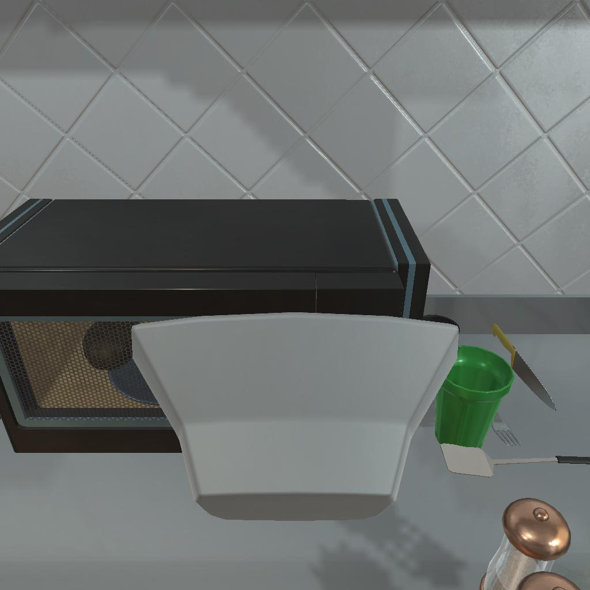

---------------------------------------------------------task: 21---------------------------------------------------------
--------------------------------------------------------------------------------------------------------------------------------------------------------------------
--------------------------------------------------------------------------------------------------------------------------------------------------------------------
Step:--------------------------------------------------------------------------18-------------------------------------------------------------------------------
----------------------------------------
VLM Prompt:
**Task**
Please perform as an embodied AI agent. Our final objective is to heat some cup and put it in countertop. Below is the plan for completing the task, the current observation, alongside historical data and admissible actions for the next step. Please determine the best action for the next step!
**Plan**
Below is a detailed step-by-step plan to complete the task.
1. Find a cup.
2. Pick up the cup.
3. Find a microwave.
4. Heat the cup with the microwave.
5. Find a countertop.
6. Place the heated cup on the countertop.
**Current Observation**
Displayed is an image capturing the current position of the agent.
**History Information**
Displayed are the previous observations with their corresponding actions.
Current State 1:
1. Place: Kitchen
2. Step Index in Plan: 1
3. Objects: Sink, Fork, Spoon
4. Action: Go to cabinet 1
Current State 2:
1. Place: Kitchen
2. Step Index in Plan: 1
3. Objects: Cabinet
4. Action: Open cabinet 1
Current State 3:
1. Place: Kitchen
2. Step Index in Plan: 1
3. Objects: Plate
4. Action: go to cabinet 3
Current State 4:
1. Place: In front of cabinet 3
2. Step Index in Plan: Step 1
3. Objects: Cabinet 1 (empty of cups), Cabinet 3 (contains a plate)
4. Action: Open cabinet 3
Current State 5:
1. Place: In front of cabinet 3
2. Step Index in Plan: 1
3. Objects: Cup, Plate
4. Action: Go to cabinet 4
Current State 6:
1. Place: In front of cabinet 4
2. Step Index in Plan: 1
3. Objects: Cabinet 4
4. Action: Open cabinet 4
Current State 7:
1. Place: Kitchen
2. Step Index in Plan: 1
3. Objects: Cup, Cabinet 4
4. Action: Close cabinet 4
Current State 8:
1. Place: In front of a closed cabinet
2. Step Index in Plan: Step 1
3. Objects: Cup, Cabinet 3
4. Action: Go to cabinet 3
Current State 9:
1. Place: Inside of cabinet 3
2. Step Index in Plan: Step prior to current action
3. Objects: Cup, Plate
4. Action: Open cabinet 3
Current State 10:
1. Place: Cabinet 3
2. Step Index in Plan: 2
3. Objects: Cup
4. Action: Take cup from cabinet 3
Current State 11:
1. Place: Kitchen in front of cabinet 3
2. Step Index in Plan: 3
3. Objects: Cup
4. Action: Go to microwave 1
Current State 12:
1. Place: In front of the microwave
2. Step Index in Plan: 3
3. Objects: Agent, cup, microwave
4. Action: open microwave 1
Current State 13:
1. Place: In front of the microwave
2. Step Index in Plan: 4
3. Objects: Microwave, cup
4. Action: Heat cup 1 with microwave 1
Current State 14:
1. Place: In front of the microwave
2. Step Index in Plan: 4
3. Objects: Microwave, Cup
4. Action: Close microwave 1
Current State 15:
1. Place: In front of the microwave
2. Step Index in Plan: 4
3. Objects: Cup, Microwave
4. Action: Go to countertop 1
Current State 16:
1. Place: Kitchen
2. Step Index in Plan: 5
3. Objects: Heated cup, lettuce, tomatoes, frying pan, countertop
4. Action: go to countertop 2
Current State 17:
1. Place: In front of the microwave
2. Step Index in Plan: 5
3. Objects: Heated cup, countertop 2
4. Action: Put bowl 1 in/on countertop 2
Current State 18:
1. Place: In front of the microwave on countertop 2
2. Step Index in Plan: 5
3. Objects: Heated cup, countertop, microwave, bowl 1
4. Action: Examine bowl 1
**Admissible Actions**
(1): go to cabinet 1
(2): go to cabinet 2
(3): go to cabinet 3
(4): go to microwave 1
(5): go to cabinet 4
(6): go to cabinet 5
(7): go to cabinet 6
(8): go to countertop 1
(9): go to coffeemachine 1
(10): go to toaster 1
(11): go to sink 1
(12): go to sinkbasin 1
(13): go to fridge 1
**Analysis Guideline**
1. Analyze the **History Information** and determine our current step in the plan and our current place.
2. List all visible objects related to the task in the current observation.
3. Analyze the objects in the current observation based on the history and the requirements for the current step, and then determine if we can complete the step with the current observation.
4. Analyze and decide on the most appropriate action to take.
5. Summarize the analysis using the following format: "Analysis: [The summarization of the analysis], The Most Appropriate Action: (i which is the integer.): [Selected action]"
**Notes**
1. We must complete each step of the plan in order and cannot skip steps when the previous ones are not finished.
2. For "Go to" actions listed as "go to xxx [n]", interpret this as there are n distinct actions available: "go to xxx 1", "go to xxx 2", ..., "go to xxx n". Select one specific action from these options instead of using "go to xxx [n]".
3. If receptacles such as drawers, cabinets, and so forth are closed in the current observation, we may try to open them.
4. Pay attention to synonyms and ensure clarity in the terms used.
5. If there is no history available, we are at the first step and the current place is "Unknown".
6. The most appropriate action must be in the **Admissible Actions**, and we cannot generate a new action that is not in the **Admissible Actions**.
**Answer**
Please select the most suitable action by following the **Analysis Guideline**, keeping the above **Notes** in mind.
----------------------------------------
----------------------------------------
VLM Response:
Analysis: According to the history information, the current step in the plan is step 5 - finding a countertop to place the heated cup on. The current place is in front of the microwave on countertop 2. In the current observation, we can see a countertop, a microwave, and a heated cup being held. Since we have already heated the cup in the microwave and we are currently standing in front of a countertop, we can complete the current step with the objects visible in the observation.
The Most Appropriate Action: (8): go to countertop 1
----------------------------------------
----------------------------------------
>>> Refine VLM Response and Get Pure Action: go to countertop 1
----------------------------------------
-----------------------------------------------------------------
Running time: 30.248865127563477 seconds
Total Money: 10.639089999999994
-----------------------------------------------------------------
-----------------------------------------------------------------
Summarization Prompt:
**Context**
Analysis: According to the history information, the current step in the plan is step 5 - finding a countertop to place the heated cup on. The current place is in front of the microwave on countertop 2. In the current observation, we can see a countertop, a microwave, and a heated cup being held. Since we have already heated the cup in the microwave and we are currently standing in front of a countertop, we can complete the current step with the objects visible in the observation.
The Most Appropriate Action: (8): go to countertop 1
**Summary Format**
1. Place: [Specify the current location]
2. Step Index in Plan: [Dispkay the current step number in the plan before taking the current action]
3. Objects: [List the objects relevant to the task]
4. Action: [Describe the most appropriate action without the "(x)" and keep the integer of the object]
Please analyze the **Context** and summarize the analysis using the **Summary Format**.
-----------------------------------------------------------------
-----------------------------------------------------------------
Summarization Response:
1. Place: In front of the microwave on countertop 2
2. Step Index in Plan: 5
3. Objects: Countertop, Microwave, Heated cup
4. Action: Go to countertop 1
-----------------------------------------------------------------
-----------------------------------------------------------------
Text Observation:You arrive at loc 7. On the countertop 1, you see a lettuce 1, a pan 1, a soapbottle 1, a bread 1, a tomato 1, a spatula 2, a apple 1, a peppershaker 2, a butterknife 1, a lightswitch 1, a ladle 1, and a spatula 3.
-----------------------------------------------------------------
UNSUCCEED